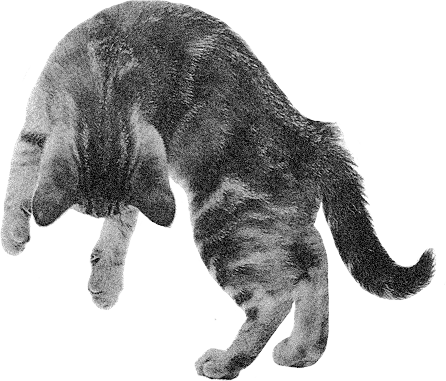

About this website
Cat Bounce is an interactive website of bouncing cats. Using Javascript to simulate 2d physics, the effects of friction, gravity, and velocity are determined according to your interaction with the cats. In other words, more force = more bounce.
Cat Bounce was created in 2012 by Tara Sinn, an artist who dabbles in code. The site was updated for modern browsers in 2017 by Nick Hulea.
Cat Bounce has been written about by Buzzfeed, Teen Vogue, Refinery 29, The Huffington Post, Mashable, and Mental Floss among others. In 2019, Cat Bounce won a Webby Award for Weirdest Website. (Thank you for your vote.)
PS. Here is a cat video for you to enjoy: